Setting up a remittance fintech in Europe
How easy — or hard — is it for African founders and fintechs to obtain a payments licence or open a branch in the top 10 European fintech markets? Payment Institution and E-Money Institution licensing across the UK, Ireland, Lithuania, the Netherlands, Germany, France, Spain, Sweden, Estonia and Malta.
Section 01Executive Summary
Nothing in the law stops an African founder. Everything else is the hard part.
Europe is the world’s largest remittance-sending region for African corridors, and firms such as LemFi, Flutterwave, Moniepoint, NALA and Chipper Cash have all entered it in the last five years. Regulators apply a nationality-neutral “fit and proper” test to shareholders and directors — no EU or UK rule prevents African citizens from owning and directing a licensed payments company.
The difficulty is everything else: capital, local substance (resident directors, offices, compliance staff), 6–18-month approval timelines, and — above all — access to safeguarding bank accounts, where Africa-focused remitters face well-documented “de-risking”.
If speed matters more than independence, start with Route 1 in the UK plus an EU BaaS partner, prove your volumes, then upgrade to a Lithuanian own-licence — the default first EU licence for foreign founders.
Section 02Ease-of-Entry Ranking
Own-licence route, ranked for an African remittance founder. One EU/EEA licence passports to all 30 EEA countries — so the choice of home state is strategic.

- 1
Lithuania
Lowest fees, fastest full licence, CENTROlink SEPA access, proven foreign-founder track record.
- 2
Estonia
Fastest-cheapest to incorporate and run · e-Residency · smaller ecosystem, no central-bank SEPA.
- 3
Malta
All-English EU process, moderate cost · banking-partner caution post-greylisting.
- 4
Spain
Zero application fee, reasonable timelines, strong Africa corridors · Spanish-language file.
- 5
United Kingdom
Easiest agent route and biggest market · ~20% rejection · no EU passport for the full licence.
- 6
Netherlands
Efficient and English-friendly · two Dutch-resident policymakers raise the substance bar.
- 7
Sweden
Competent regulator, highest application fee · 4–5 local hires expected.
- 8
France
Deep market, excellent founder visa · French-language rigour lengthens preparation.
- 9
Ireland
Slowest fresh authorisation (12–18 mo) · ranks far higher via the acquisition route.
- 10
Germany
Slowest, most demanding, German-language · passport in rather than licensing there.
Section 03How Licensing Works
EU payments law is set by PSD2 and the E-Money Directive, implemented by each member state’s national regulator. Two licence types matter for remittance — and the capital gap between them is the first strategic decision.
If your product is only send-money-home transfers, you usually do not need an EMI — a PI is 17× cheaper on capital, and faster.
The PSD3/PSR package (political agreement November 2025, transposition ~late 2027) folds EMIs into the PI regime and will oblige banks to provide accounts to payment institutions unless refusal is justified — a direct answer to de-risking. Existing licences stay valid 24–30 months, then every PI/EMI must re-apply. Licence now under PSD2; budget for re-authorisation around 2028–2029.
Section 04Time & Fees, Market by Market
“Realistic timeline” means end-to-end from serious preparation to authorisation — not the statutory 3-month clock a first application rarely meets.
Ireland and Spain are the only zero-fee jurisdictions of the ten. Sweden and Germany charge the most — but capital minima are identical EU-wide; the real differences are fees, speed, substance and language.
Section 05The Ten Markets at a Glance
| Country | Regulator | App. fee | Timeline | Substance | Ease |
|---|---|---|---|---|---|
| United Kingdom | FCA | £1.5–5k | ~12 mo (agent 1–2 mo) | UK head office, vetted SMFs | 5 |
| Ireland | CBI | €0 | 12–18 mo | Dublin office + local execs | 9 |
| Lithuania | Bank of Lithuania | €1.2–1.5k | 6–12 mo | 1 resident director + local MLRO/IT/risk | 1 |
| Netherlands | DNB | ~€6.8k | 6–10 mo | 2 NL-resident policymakers | 6 |
| Germany | BaFin | €10–20k | 9–18 mo | 2 directors (1 DE-resident), German staff | 10 |
| France | ACPR | modest | 6–15 mo | 2 dirigeants (1 FR-resident), French filings | 8 |
| Spain | Banco de España | €0 | 6–12 mo | 2 directors (1 ES-resident), Spanish filings | 4 |
| Sweden | Finansinspektionen | SEK 200k | 9–12 mo | 4–5 local staff (CEO, MLRO, COO) | 7 |
| Estonia | Finantsinspektsioon | modest | 4–9 mo | 1 board member in EE/EU + local MLRO | 2 |
| Malta | MFSA | €10k | 9–12 mo | Resident director + local ops | 3 |
Capital minima are €20k (remittance PI) / €350k (EMI) and identical across all member states. All licences except the UK’s passport across the EEA. Sweden applies €125k for broad payment services; the €20k remittance tier applies to remittance-only files.
Section 06Country Profiles
“Realistic timeline” means end-to-end from serious preparation to authorisation — not the statutory 3-month clock a first application rarely meets.
1Lithuania
EasiestThe EU’s fintech licensing gateway by design: low fees, English-language process, a central bank that markets to applicants, and CENTROlink for direct SEPA access without a commercial bank. The default first EU licence.
Timeline6–12 mo
VisaStartup pathway, low barriers
2Estonia
Easy to runLowest-friction EU jurisdiction to incorporate and administer remotely; OÜ share capital just €2,500. No CENTROlink equivalent, so bank access must still be solved commercially. Best as a lean EU base.
Timeline4–9 mo
VisaStartup Visa 2–5 yrs · e-Residency
3Malta
ModerateEnglish-language EU jurisdiction with decent timelines; exited the FATF grey list in 2022. Banks still price Maltese payments firms carefully, but the all-English process attracts anglophone founders.
Timeline9–12 mo
VisaEmployment / self-sufficiency routes
4Spain
AttractiveQuietly attractive: zero authorisation fee, cheaper than northern hubs, and significant Moroccan, Senegalese and broader African corridors. The Spanish-language file is the main friction for anglophone teams.
Timeline6–12 mo
VisaStartup-Law Entrepreneur Visa, 3 yrs
5United Kingdom
HardBiggest Africa-corridor market and the best agent-route infrastructure — the standard beachhead. But budget seriously: Moniepoint spent $3.7m+, rejection is ~20%, and the May 2026 safeguarding regime adds ongoing cost.
Timeline~12 mo · agent 30–60 days
VisaInnovator Founder · Global Talent
6Netherlands
Mod.–hardA top-tier home state with excellent infrastructure (iDEAL) and a respected regulator. The two-Dutch-resident-policymaker rule forces senior local hires early, raising cost versus Lithuania for the same passport.
Timeline6–10 mo
VisaDutch Startup Permit → self-employed
7Sweden
ModerateResponsive regulator, mostly-English filings, and real Somali/Eritrean corridor demand — but the highest application fee of the ten and 4–5 local hires offer no advantage over Lithuania. Better served by passporting in.
Timeline9–12 mo
VisaSelf-employment permit route
8France
Mod.–hardOne of Europe’s largest African diasporas and a genuine fintech scene. The ACPR is professional but French-first — factor translation and local counsel. Many remitters serve France via passporting instead.
Timeline6–15 mo
VisaTalent Passport, up to 4 yrs
9Ireland
Hard / buyEnglish-speaking, common-law, post-Brexit EU base with strong reputational value. The CBI is thorough and slow for new applicants — which is why LemFi bought its way in. Ireland-by-acquisition is arguably the premium EU route.
Timeline12–18 mo
VisaSTEP: €50k funding, 2 yrs renewable
10Germany
HardestEurope’s largest economy and a major Africa-diaspora market, but the least friendly licensing home state for a non-EU team: BaFin is slow and demanding, and the process runs largely in German. Passport in instead.
Timeline9–18 mo
VisaNo startup visa · self-employment
Section 07The African-Founder Dimension
De-risking is the real boss level.
The licence is rarely what kills Africa-focused remitters — bank account access is. Since 2015 the World Bank has documented systematic termination of money-transfer-operator accounts as a business decision: correspondent banking is low-margin and high-AML-risk.
Mitigations that work
- Licence in Lithuania and clear SEPA directly via CENTROlink, bypassing commercial banks for euro payments.
- Over-invest in AML tooling and staffing beyond the minimum — de-risking is priced on perceived control quality.
- Maintain 2–3 redundant banking / safeguarding relationships from day one.
- The incoming EU PSR (Art. 32) will force banks to justify refusals of payment-institution accounts — a regulatory tailwind from ~2027.
Case studies
| LemFi NIGERIA / UK | The textbook ladder: Small PI → acquired RightCard for a UK EMI (2021) → entered the EU via a Modulr BaaS partnership (Jan 2025) → acquired Bureau Buttercrane for an Irish EU-passported PI ~3 weeks later, with Dublin as EU HQ. ~$1bn monthly volume, $53m Series B. |
| Flutterwave Send PURE PARTNER MODEL | UK services via FCA-authorised Global Remit; EU services via Polish-licensed WBTCB.PL. Flutterwave’s own UK/Cyprus entities hold no licences. Paused and resumed European service in July 2025 — illustrating both the speed and the fragility of the partner route. |
| Moniepoint NIGERIA | Launched in the UK under PayrNet’s licence, then acquired Bancom Europe for independent EMI status; >$3.7m spent since Feb 2024 — the honest benchmark for what UK entry really costs. |
Section 08Budgets & Playbook
| Route | Reg. capital | Setup cost | Time to live | First-year run cost |
|---|---|---|---|---|
| Agent / BaaS (UK or EU) | None | €10–60k | 4–12 weeks | €50–150k + revenue share |
| Small PI (UK/ES, domestic) | €0–minimal | €20–50k | 3–6 months | €100–200k |
| Own PI, remittance (Lithuania) | €20k | €40–80k | 6–12 months | €250–400k all-in |
| Own EMI (Lithuania / Malta) | €350k | €60–120k | 6–12 months | €350–600k + capital |
| Own EMI (UK) | £350k | £150k+ | ~12 months | >$3.7m over ~2 yrs (Moniepoint) |
| Acquisition of licensed entity | Target’s maintained | €0.5m–several €m + DD | 3–9 months | Target’s existing cost base |
Recommended playbook
- Months 0–3 · Launch as an agent / partner. UK: register as a PSD/EMD agent under an established principal (30–60 days, ~£150). EU: sign with a BaaS/EMI partner for SEPA corridors. Prove volumes, unit economics and AML performance.
- Months 3–12 · Secure your own EU licence. Default: a Lithuanian PI (remittance scope, €20k capital) for speed and CENTROlink; upgrade to EMI (€350k) only when wallets/IBANs are core. Well-funded alternative: acquire an Irish or UK licensed entity.
- Year 1–2 · Add the UK licence. Add the UK licence (or keep the UK agent arrangement) once EU operations are stable — remember the two regimes don’t passport into each other.
Throughout: over-build AML (a dedicated MLRO before the regulator asks), maintain redundant banking relationships, document founder source-of-wealth meticulously, and budget for PSD3 re-authorisation around 2028–2029.
Section 09Sources & Disclaimer
Key sources consulted July 2026 (primary/regulatory marked P): European Parliament Research Service — Payment Services / PSD3 briefing; FCA — UK Payment Accounts: Access & Closures; World Bank — De-risking in the Financial Sector; Flutterwave Send App licence disclosures; ACPR authorisation procedures; Finansinspektionen — apply for authorisation.
Practitioner & press: EY (PSD3 impacts), InnReg PI/EMI guide, Crassula 2026 guides, Zitadelle AG EMI guide, Regulatory Counsel, Advapay, Equilex (MFSA), Finlego (Estonia), thebanks.eu, PSP Lab, Harper James, Deloitte UK, TechCabal / GhanaWeb (LemFi–Bureau Buttercrane), Yahoo Finance (LemFi Series B), FinanceInAfrica (Moniepoint), Euromoney, Nairametrics, Vedette Legal (startup visas).
Disclaimer: this report is for general information only and is not legal, immigration, tax or financial advice. Licensing requirements change frequently — engage a regulatory lawyer in your target jurisdiction before committing capital. Figures are indicative syntheses of 2025–2026 practitioner sources; actual costs vary with scope, corridor risk and negotiation.
The diaspora helps the diaspora.
Africa Global Forum is a peer network for Africans abroad — help each other, sit together, and bounce ideas. The research above is part of an open library. The Forum itself is by application.